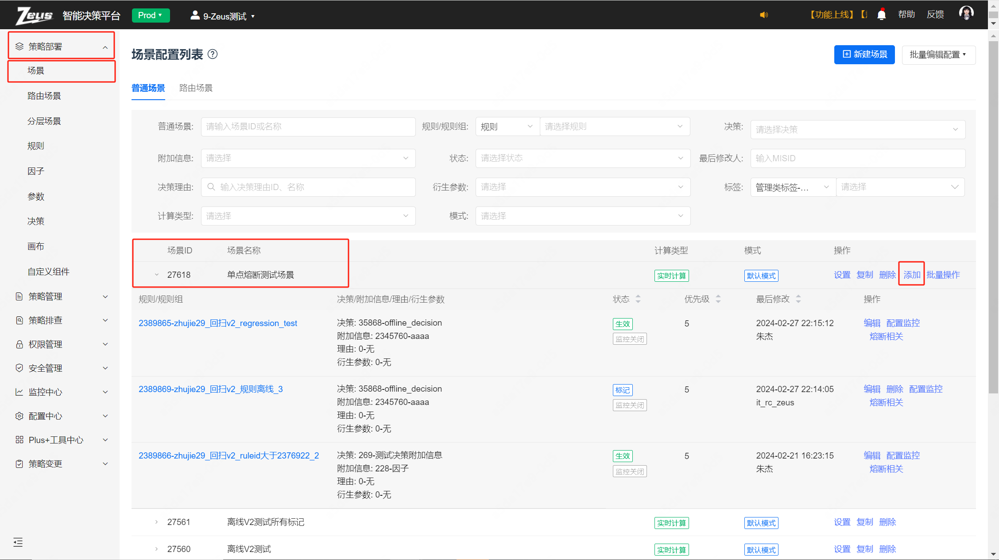
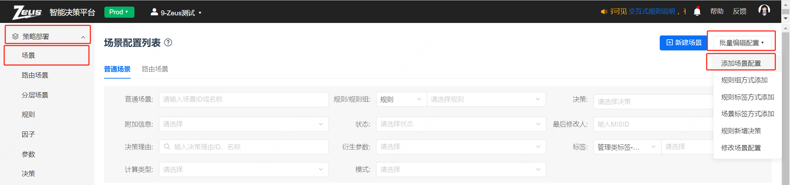
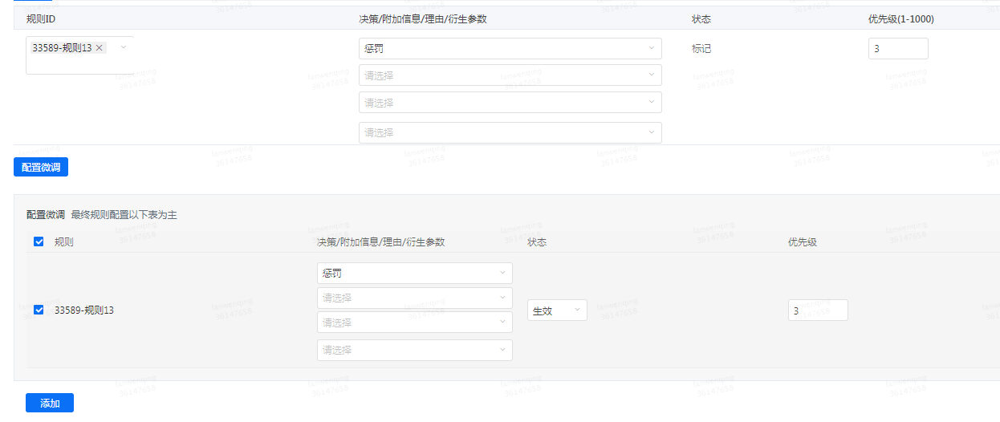
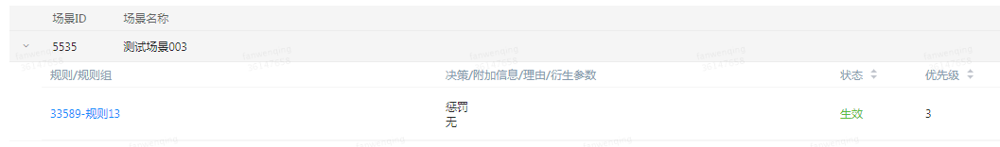
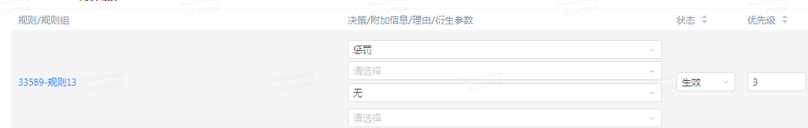

说明：添加场景配置
一、背景
场景配置：通过场景、规则、决策构成的场景配置组成策略，例如：“外卖营销场景” 下 “是模拟器的请求” 进行 “拦截”；在场景配置中，scene与rule是1：n的关系，一个场景可以配多条规则，每条规则在该场景下可以产生不同的决策；
二、操作说明
step1：入口
策略部署—>场景—>展开某条场景信息—>添加

策略部署—>场景—>批量编辑配置—>添加场景配置

step2：添加场景配置
选择规则，选择决策，填写优先级，配置微调，在微调中选择状态（有生效、离线、标记三种状态），最终点击添加，添加成功后会在场景列表中看到相关场景下的规则配置信息
【特殊说明】：若是业务开通了强制标记权限，则新添加的场景配置（规则+决策+状态+优先级）必须在该场景下标记30分钟方可再修改状态为生效。标记满足30分钟，会有大象通知标记完成。


step3：修改场景配置
同添加场景配置入口一样，进入场景列表页面，在场景列表中找到相应的场景选中，可对添加的规则决策信息进行删除，或者在规则决策信息后点击编辑，对决策、状态、优先级进行修改
